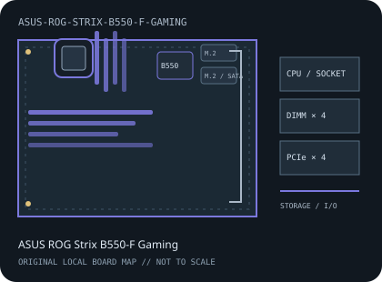

[ INDIVIDUAL COMPONENT // MOTHERBOARDS ]
ASUS ROG Strix B550-F Gaming
AMD Socket AM4 / AMD B550, ATX, 305 × 244 mm, 2020. This record identifies the exact model and revision scope below.

REVISION WARNING: Verify the full model name and PCB revision silkscreen before fitting a CPU, selecting memory, or applying firmware. Similar names and revisions may use different support files.
Specifications
| Catalog subcategory | AMD Socket platforms |
|---|---|
| Board / revision covered | ROG Strix B550-F Gaming, standard non-WiFi model; verify PCB identity because the Gaming (Wi-Fi), Gaming II and other variants are not interchangeable. |
| Socket and chipset | AMD Socket AM4 / AMD B550 |
| Form factor | ATX, 305 × 244 mm |
| Memory | Four dual-channel DDR4 DIMM sockets, up to 128 GB; supported speeds, ECC operation and validated modules depend on the CPU and ASUS memory QVL. |
| CPU and BIOS support | Ryzen desktop CPUs in ASUS's exact CPU support table, including Ryzen 3000, selected Ryzen 4000 G-Series and Ryzen 5000 families with the minimum listed BIOS. Verify exact CPU and firmware. |
| Expansion | One CPU-connected PCIe x16 slot (PCIe 4.0 with compatible CPUs), one chipset x16-length slot operating at x4, and three PCIe x1 slots. |
| Storage | Two M.2 sockets with CPU/chipset-dependent PCIe and SATA modes, plus six SATA 6 Gb/s ports; review ASUS's M.2/SATA sharing table. |
| Rear I/O and connectivity | Rear HDMI and DisplayPort for supported APU output, USB Type-C and Type-A across USB 3.2 generations, 2.5GbE LAN, SupremeFX audio with optical S/PDIF and BIOS FlashBack. |
Compatibility and revision notes
This entry covers the non-WiFi B550-F Gaming, not the Wi-Fi model. PCIe 4.0 and display output depend on the installed CPU; use ASUS CPU and memory lists and confirm the required BIOS.
Socket, connector shape and chipset branding alone do not establish compatibility. Check the exact board revision, CPU support table, minimum BIOS, memory population rules, power connectors, case clearance and lane-sharing details in the cited documents.
Preservation and repair
Inspect AM4 socket contacts, DIMM latches, M.2 thermal hardware and rear USB-C port. Record board revision and BIOS before updating; never use firmware for B550-F Gaming II.
For archival preservation, record PCB revision, serial/date codes, installed firmware, known faults, repairs and test conditions. Use ESD-safe handling and do not power a board with loose conductive hardware beneath it.
Manufacturer sources
- ASUS ROG Strix B550-F Gaming product specificationsManufacturer specifications for the standard non-WiFi model.
- ASUS ROG Strix B550-F Gaming manual and downloadsOfficial model-specific manuals and BIOS resources.
- ASUS ROG Strix B550-F Gaming CPU supportCheck the exact CPU and required BIOS version.
Manufacturer specifications, manuals and support lists are authoritative for the physical board; use only revision-matched firmware.